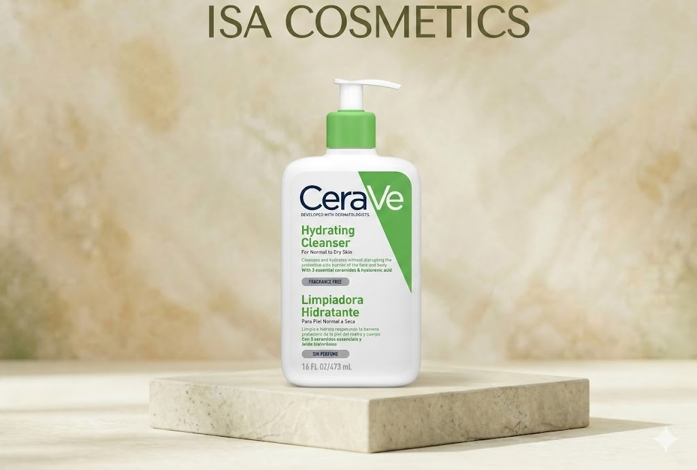
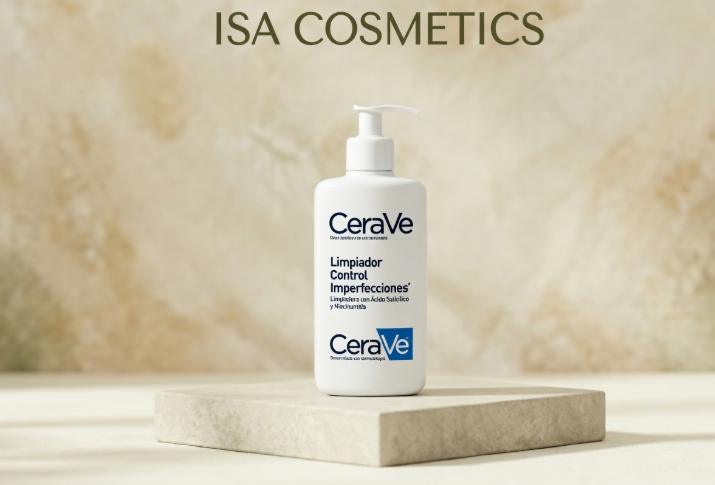
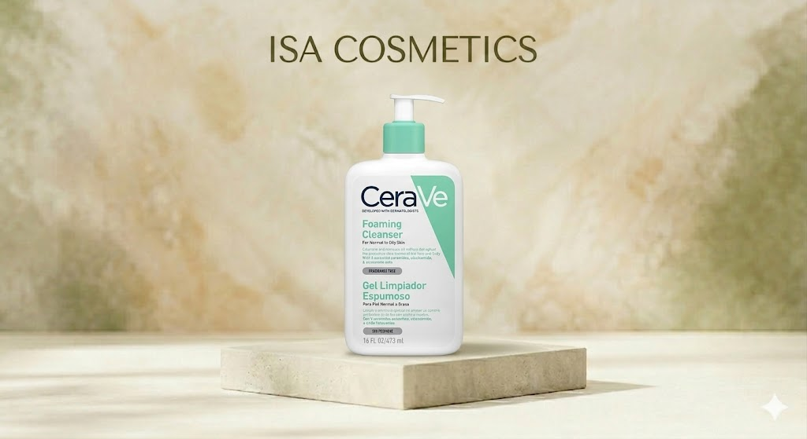
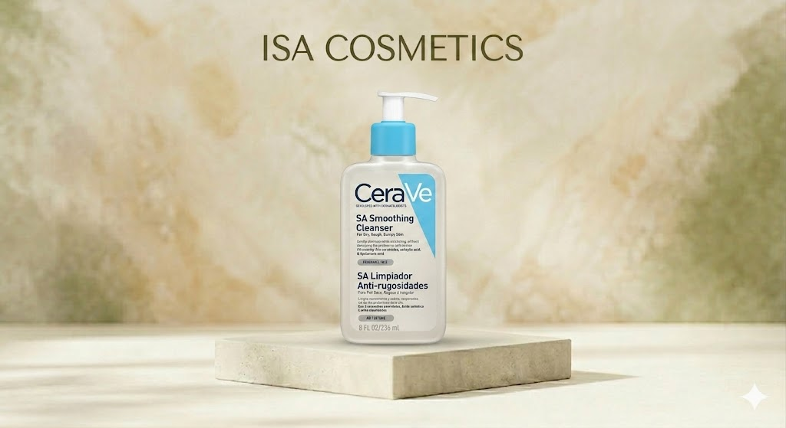

Uso y beneficios: Limpia e hidrata la piel respetando la barrera protectora del rostro y cuerpo sin resecarla. Es una fórmula sin espuma y libre de fragancia. Activos principales: Contiene 3 ceramidas esenciales y ácido hialurónico. Para quiénes: Específicamente diseñada para piel normal a seca. Cantidad: 473 ml / 16 FL OZ. Valor: Un estándar de oro en limpieza suave recomendado por dermatólogos por su alta tolerabilidad.
Bs 250 Consultar por WhatsApp
Uso y beneficios: Limpia e hidrata suavemente sin alterar la barrera protectora de la piel del rostro y cuerpo. Contiene 3 ceramidas esenciales y ácido hialurónico. Para quiénes: Piel normal a seca. Cantidad: 473 ml / 16 FL OZ.
Bs 230 Consultar por WhatsApp
Uso y beneficios: Limpia profundamente y elimina el exceso de grasa sin alterar la barrera protectora de la piel. Su textura en gel refrescante crea una espuma suave. Activos principales: Contiene 3 ceramidas esenciales, niacinamida (para calmar la piel) y ácido hialurónico. Para quiénes: Ideal para piel normal a grasa. Cantidad: 473 ml / 16 FL OZ. Valor: Limpieza eficaz que mantiene el equilibrio de hidratación natural, ideal para uso diario.
Bs 230 Consultar por WhatsApp
Uso y beneficios: Limpia suavemente mientras exfolia la piel sin alterar su barrera protectora. Ayuda a suavizar la textura de la piel irregular y rugosa. Activos principales: Formulado con Ácido Salicílico (exfoliante), 3 ceramidas esenciales y ácido hialurónico. Para quiénes: Piel seca, rugosa e irregular. Cantidad: 236 ml / 8 FL OZ. Valor: Fórmula sin perfume que mejora la textura de la piel mediante una limpieza dermo-profesional.
Bs 230 Consultar por WhatsApp